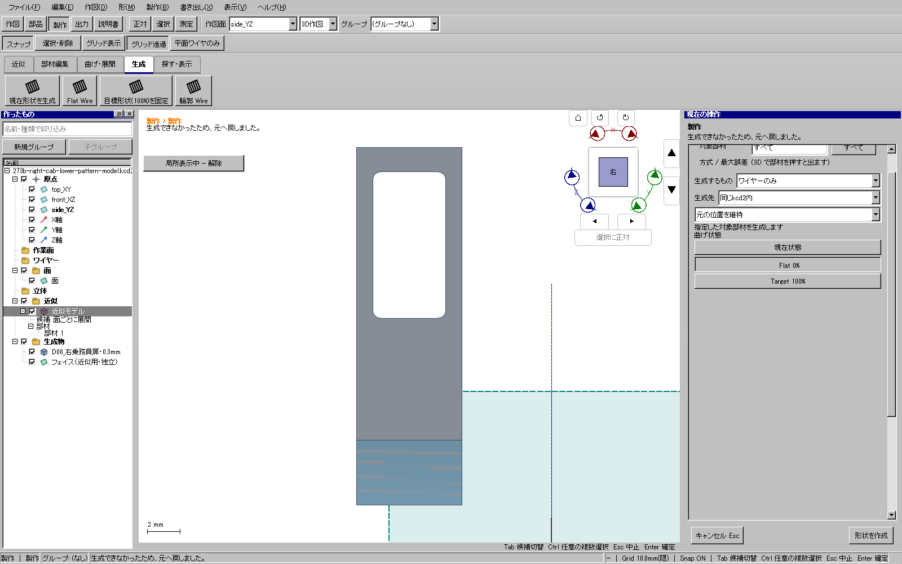
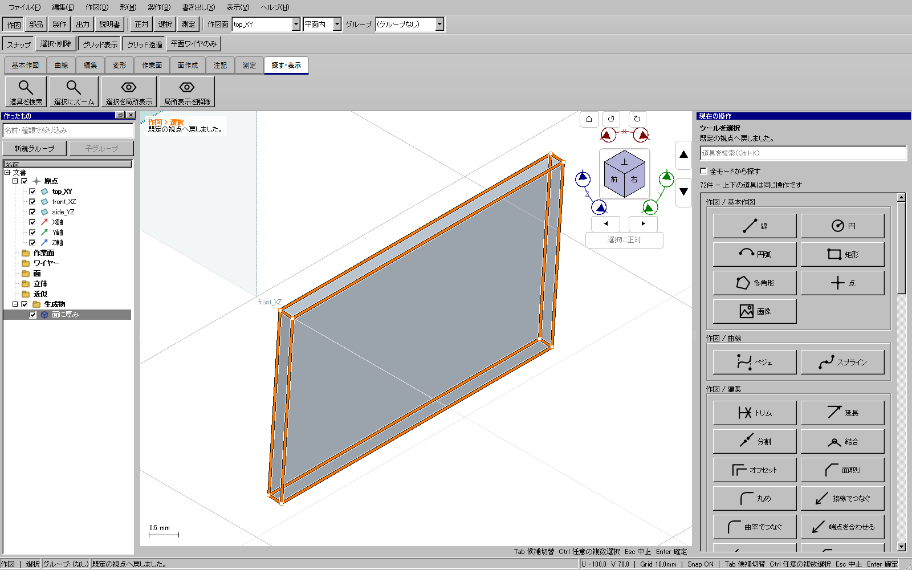

2026-11-09。WP-09の既存native製作入力providerだけを限定修正。重点試験は成功。全体・配布版ゲートと公開はこれから行う。全車体の製作モデルと型紙、生成物の細分化の軽量化は未完了。
公開更新4で、部品の曲面を選択して独立面を取り出し、面オフセット−0.15 mmで板厚中央の面を作った。その面から「面の形から展開」で型紙を作り、SVG・DXF・PDFへ出力できた。しかし右乗務員扉の裾でFlat Wireを生成すると、変更を取り消して失敗した。左側の同等面は生成できた。

providerは境界を正常に取得していたが、正規化UVで完全な長方形になる曲面だけ材料境界を省略していた。その経路では面分類の型紙だけができ、固定処理に必要な組立対応とレールがなかった。左側はUVに微小差があり、境界を保持する別の経路へ進んでいた。
取得した曲面の境界を、穴の有無とUV長方形判定にかかわらず渡す。平面は従来の曲線型付き境界を引き続き使う。許容差を広げず、公開API・保存形式・元形状/穴/寸法と不正入力の拒否を変更しない。鉄道模型専用の条件は追加しない。
| 確認 | 結果 |
|---|---|
| 新しい回帰試験 | 修正前に材料境界の保持で失敗。修正後は回転・曲線方向反転を含む円筒面から、0/100%の境界と編集可能なワイヤを生成。材料面積と元native形状の保持も成功。 |
| 関連UI試験 | 6穴、C形切り欠き、接線面を跨ぐ開口、曲げ・捩れ・短い折れを含むHP-FABの10件が成功。 |
| 添付由来の保存中立面 | 実UI294で型紙3形式→Flat Wire→面→中央0.3 mmの厚み→保存→Undo/Redo→独立KCD2。再読込した実UI295でSTEPも成功。294末尾のSTEPだけ試験側の相対パス指定で期待先へ保存されず、295で絶対パスへ直して確認した。 |
| 実際の平板部品 | 有効な1ソリッド、6フェイス、体積7.7841808611806265 mm³。入力中立面と原本は保全。 |
| 出力した型紙 | 6.5×3.9919 mm、閉じた輪郭1個。独立読み込みの有限標本差はSVG/DXF約0.000012 mm、SVG/PDF約0.00015 mm。物理印刷や工作の証明ではない。 |

再現・証拠は作業出力のcurved-rectangle-before-20261109、curved-rectangle-after-20261109、curved-rectangle-related-fabrication-20261109、actual-candidate15-right-cab-neutral-20261109、actual-candidate15-right-cab-reopen-step-20261109、294-right-cab-cut-proof.jsonに保存した。全体ゲートの結果は完了後に追記する。
最初の全体ゲートはHP-OUT-04の旧期待値（4本のワイヤと面の5資産）で失敗を確認して中断した。取得した境界を保持した結果は閉輪郭1本と面1枚である。既存試験を、独立出力を読み戻して同じ指定部材の範囲・全辺の接続・生成面上の輪郭・配置取消時の文書保持も検査する内容へ更新した。強化した試験は成功。試験追加中の最初の重点実行では生成先を同じ文書のまま保存したため失敗し、独立KCD2と元位置を明示して再試験した。製品の許容差や安全条件は変更していない。中断記録は旧runのinterruption.json。新しい全体ゲートを実施する。